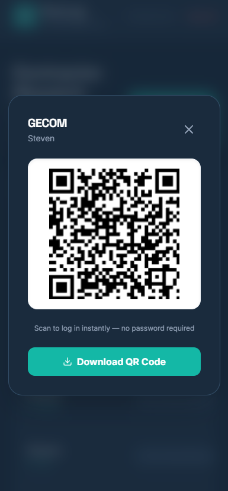
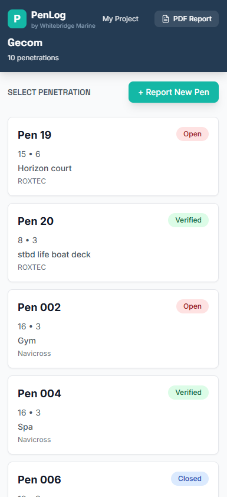
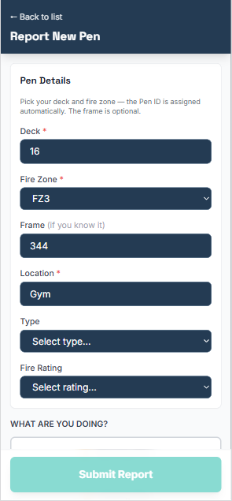
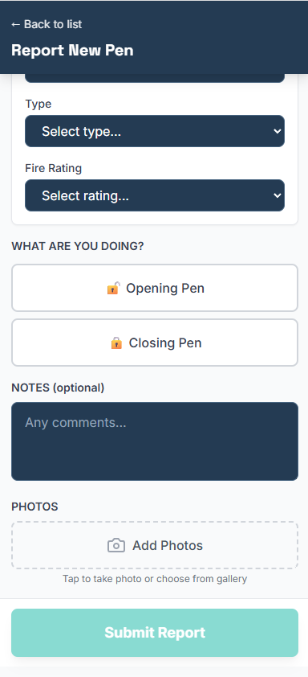
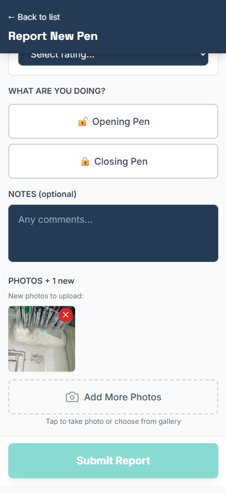
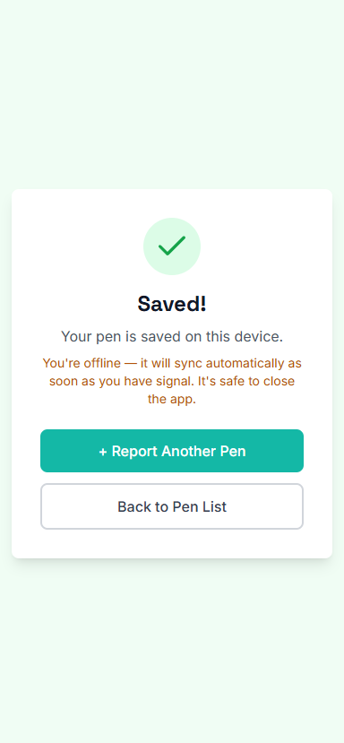

1
Open your link
Scan the QR code or tap the link your supervisor sent. You're straight in — no password, no sign-up.

2
Choose your pen
Tap a penetration in your list to update it — or tap + Report New Pen to log a new one.
For a new pen, just pick the deck, fire zone and location; the Pen ID is worked out for you. Frame is optional.


3
Say what you did
Tap Opening Pen or Closing Pen, and add a note if it helps.

4
Add your photos
Tap Add Photos and take your before / after shots. You need at least 2 photos to close a pen — they're your proof the work's done.

5
Submit — and you're done
Tap Submit Report. That's it.
No signal on the ship? No problem — it saves on your phone and uploads by itself the moment you have signal. It's safe to close the app.
